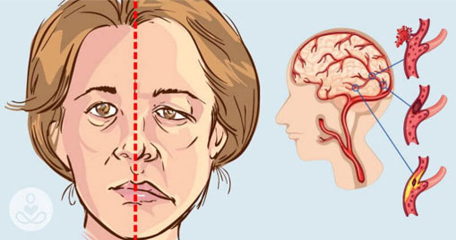
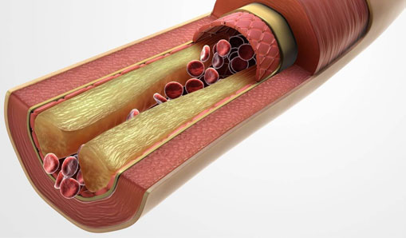
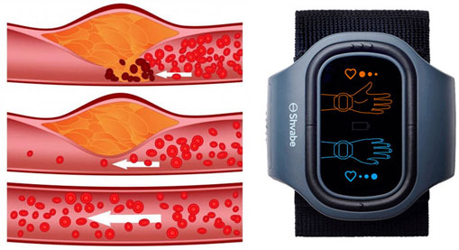

Évente 17,5 millió ember hal meg szív- és érrendszeri betegségekben, 2030-ra pedig ez a szám még legalább 10 millióval nőni fog. Pedig a szívrohamok 90%-a megelőzhető lenne. Hogy hogyan ne kerüljünk a kockázati zónába és hogyan lehet gyógyítani a magas vérnyomást, arról Lawrence J. Appel mesél nekünk, az Amerikai Kardiológus Társaság főorvosa.
– Jó napot kívánok, Doktor Úr! Az első kérdésünk a statisztikákkal kapcsolatos, mennyire nevezhetők valósnak ezek az adatok? És valóban igaz, hogy a hipertónia már jóval fiatalabb korban támad?
– Jó napot kívánok, igen, sajnos ez mind igaz. Az elmúlt hat hónapban tizenkét fiatal volt nálunk valódi miokardiális infarktussal, a legfiatalabb 16 éves, a legidősebb 24 éves volt. Ezt egyszerűen lehetetlen volt elképzelni még tíz évvel ezelőtt. Mit mondhatunk akkor a 40 évesnél idősebb emberekről.
– Normális-e a vérnyomása?
– 20–40 éves korban 120/80 a normális. 40–60 éves korban 135/90. 140/90 már enyhe magas vérnyomásnak számít, 150/100 pedig már a súlyos magas vérnyomás kategóriája
– Hogyan lehet kikerülni a kockázati zónából, vagy megérteni, hogyan az ember vérnyomásproblémákkal küzd?
– Sajnos senki sem védett a vérnyomás ingadozásoktól. Majdnem mindig ugyanazt a történetet hallom: „A mai nap szörnyű. Minden esik ki a kézből, fejfájás, semmihez sincs kedv, csak feküdni. Fáradtan jön haza az ember a munkából, de nem tud sokáig aludni. Éjszaka még ötször felébred. Valószínűleg valamilyen légköri viharok miatt... – de ezek nem viharok, hanem valódi magas vérnyomás.
– Szóval azt akarja mondani, hogy az emberek nem veszik észre a betegség első tüneteit?
– Igen, így van! Az emberek 87% -a egyszerűen nem ismeri a normál vérnyomás mutatóit, és csak akkor kezd el foglalkozni az egészségével, amíg el nem éri a kritikus pontot. Pedig megélné. A magas vérnyomással járó szövődmények, mint a szívkoszorúér- betegség és a szélütés gyakorisága meghaladják az AIDS-et vagy rákot. Csak az interjúnk kezdete óta 263 ember halt meg hipertóniában világszerte.

– Mennyi a magas vérnyomásban szenvedők átlagéletkora ma?
– A szakértők adatai szerint a felnőttek 80%-a szenved a magas vérnyomástól világszerte, 60%-uk 40 év fölötti.
– Miért jelenik meg a magas vérnyomás?
– A magas vérnyomás fő okai: az egészségtelen étrend, a testmozgás hiánya, a glükóz és a koleszterin megemelkedett szintje. Adja hozzá ehhez még a krónikus túlterhelést, a stresszt, a dohányzást és a modern élet egyéb jellemzőit. Ez már így elmondva is félelmetes kombináció.
– Mr. Lawrence, de gyógyítható-e a magas vérnyomás?
– Igen, most a jó hír: a magas vérnyomás nem csak gyógyítható, hanem meg is lehet előzni! Éppen ezért ülünk most itt Önnel. Szeretnék mesélni Önöknek az АВР-051 vérnyomás-szabályozóról, amelyet a közelmúltban egy hipertóniás krízisnek szentelt konferencián mutattak be, és amely már több mint 1 000 000 embernek segített az artériás hipertónia helyreállításában.

– Várjon, szóval nem a tablettákról beszélünk?
– Bármennyire is fejlett a farmakológia, az összes ismert vérnyomáscsökkentő gyógyszer csak átmenetileg csökkenti a vérnyomást, és nem küzd meg annak okaival. A tudomány bebizonyította, hogy jelenleg az elektromos terápia a leghatékonyabb kezelés a hagyományos orvoslásban. A vérnyomás impulzusok általi befolyásolása nemcsak normalizálja az értékeket, hanem megtisztítja a koleszterintől eldugult ereket is.
 Az erek koleszterinnel való szennyeződése a fő oka az artériás hipertóniának.
– Meséljen még erről a kezelési módszerrő és a készülék működéséről.
– A vérnyomás-szabályozó egy karkötő, amely egy bizonyos frekvencia elektromágneses impulzusát továbbítja a bőrön keresztül. A különböző nagyságú elektromos impulzusok hatást fejtenek ki a gerincvelő ideggyökereire, így erősítve az ereket a jobb vérkeringés érdekében.
 Az idegrostok mozgásba jönnek ettől a hatástól, ami javítja a vér mikrocirkulációját, tisztítja és erősíti az erek falát.
– Ez elképesztő! És nehéz használni? És meddig kell várni a hatásra?
– Mindez nagyon egyszerű! Felteszi az АВР-051-et a bal keze csuklójára és elindítja a programot. És ennyi. A vérnyomás-szabályozó fokozatosan csökkenti a vérnyomást a a bioaktív zónákra kifejtett elektromos stimuláció révén. A terápiás hatás elérése érdekében 14 napon keresztül napi gyakorisággal javasolt végezni az АВР-051 készülékkel az elektromos stimulációs eljárásokat.
– Vagyis 14 nap múlva végleg búcsút inthetünk a hipertóniának?
– A vérnyomás-szabályozó egy karkötő, amely egy bizonyos frekvencia elektromágneses impulzusát továbbítja a bőrön keresztül. A különböző nagyságú elektromos impulzusok hatást fejtenek ki a gerincvelő ideggyökereire, így erősítve az ereket a jobb vérkeringés érdekében.
– Meséljen még erről a kezelési módszerről és a készülék működéséről.
– Minden a betegség stádiumától függ. 14 nap elteltével még a legsúlyosabb betegeknél is javul az általános egészségi állapot. Vagyis a vérnyomás csökkenni fog, és ezzel együtt eltűnik a fejfájás, a szédülés, az időjárásra való érzékenység, álmatlanság.
– Az emberek, akiknek nincs magas vérnyomása, használhatják?
– Sajnos senki sem védett a hipertóniától, még a fiatalok sem. És az életkorral az emberek érrendszere eldugul, kezdi megadja magát. Ezért az АВР-051 orvosi előírás nélkül is használható. Növeli a munkaképességet a vérnyomás normalizálásával, és nem csak harcol a betegséggel, hanem megelőző intézkedésként is szolgál az olyan betegségek számára, mint például:
- I-II-III stádiumú artériás hipertenzió;
- neurocirkulációs dystonia;
- szívkoszorúér-betegség;
- angina;
- érbetegségek és az erek traumatikus sérülései;
- krónikus szívelégtelenség;
- angio-görcsök;
- Raynaud-kór.
– Nagyon köszönöm az interjút. Már csak egy kérdésem maradt: hol lehet hozzájutni a vérnyomás-szabályozóhoz?
– A АВР-051 szabad forgalomban kapható, de ha szeretne megtakarítani egy kis pénzt, azt tanácsolom, hogy a gyártó weboldalán vásárolja meg. Én pedig nagyon remélem, hogy sikerült elérhető módon megosztanom a legfontosabb részleteket a téma iránt érdeklődők számára.